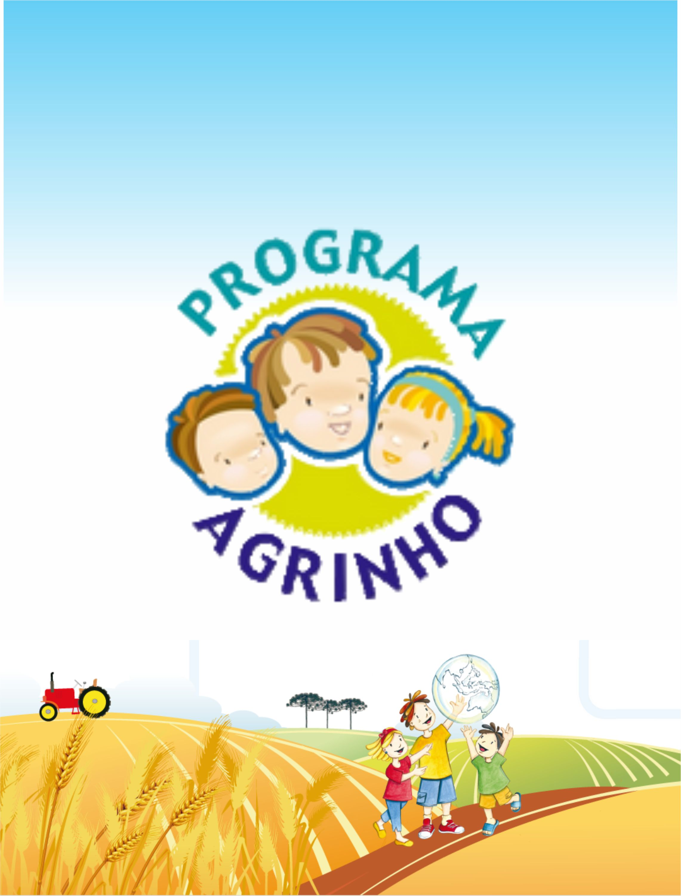
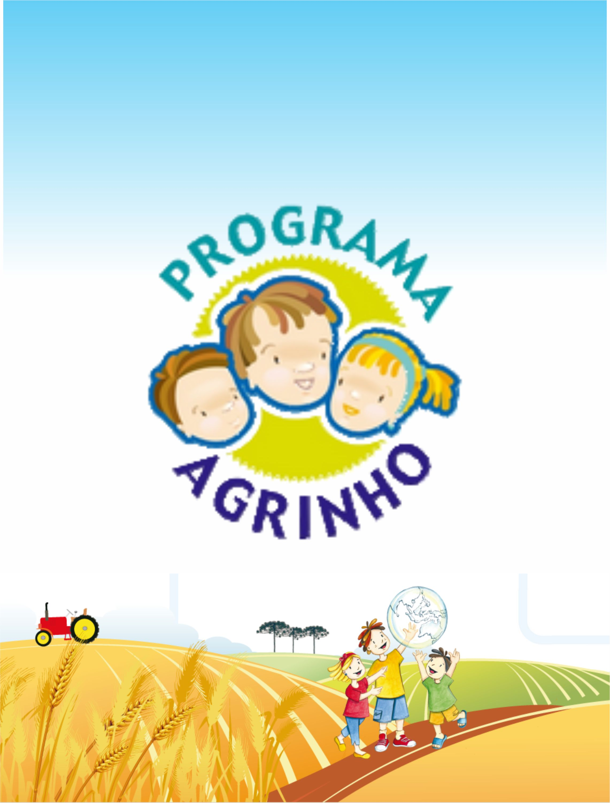

Sobre o Agrinho
O Agrinho é uma iniciativa desenvolvida pelo Sistema Farsul, Fecomércio-RS e Senar-RS para envolver escolas e comunidades rurais em atividades que promovem a educação ambiental, a saúde, a segurança e o protagonismo infantojuvenil.
Desde o seu lançamento, o Agrinho tem impactado milhares de alunos e educadores, transformando a realidade das escolas e contribuindo para um futuro mais sustentável.
Atividades do Agrinho

Concurso de Redação
Os alunos participam de concursos de redação e desenho, incentivando a criatividade e expressão artística.
Horta na Escola
As escolas implantam hortas educativas para ensinar sobre agricultura sustentável e alimentação saudável.
Visitas Técnicas
Os alunos visitam propriedades rurais e indústrias para aprender sobre o ciclo produtivo e as práticas sustentáveis.
Galeria de Imagens


 

Depoimentos
"Participar do Agrinho foi uma experiência transformadora para mim e meus alunos. Aprendemos tanto sobre sustentabilidade e cidadania que levamos esses valores para toda a vida."
Maria Silva, Professora
"O Agrinho nos ensina que pequenas ações podem fazer grandes diferenças. Estamos orgulhosos de fazer parte dessa iniciativa."
José Santos, Aluno